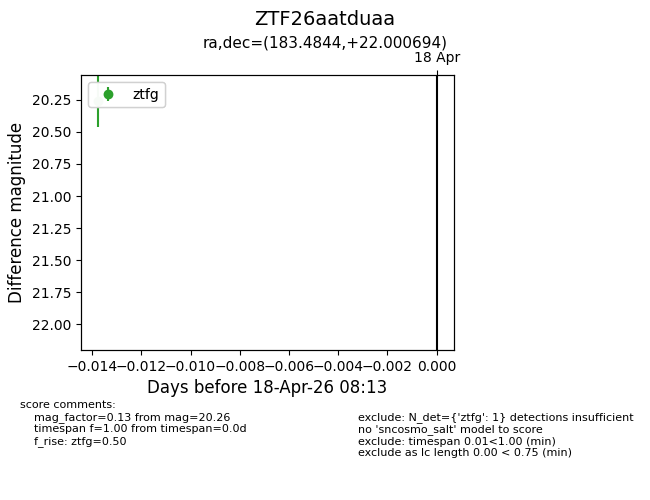
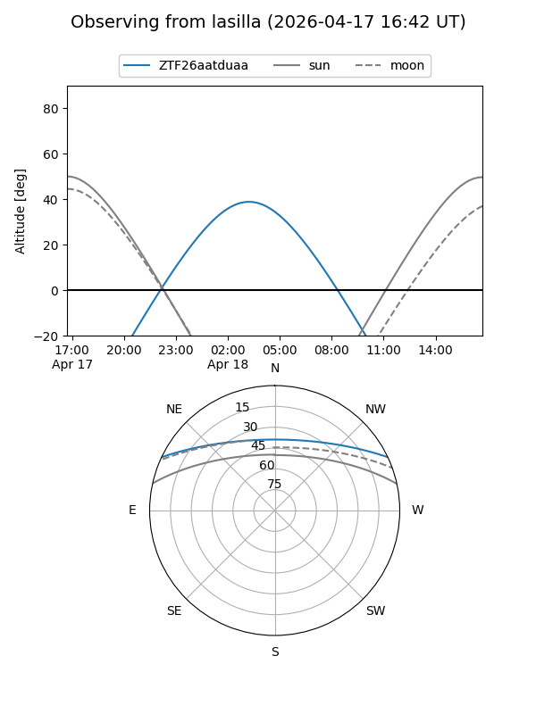
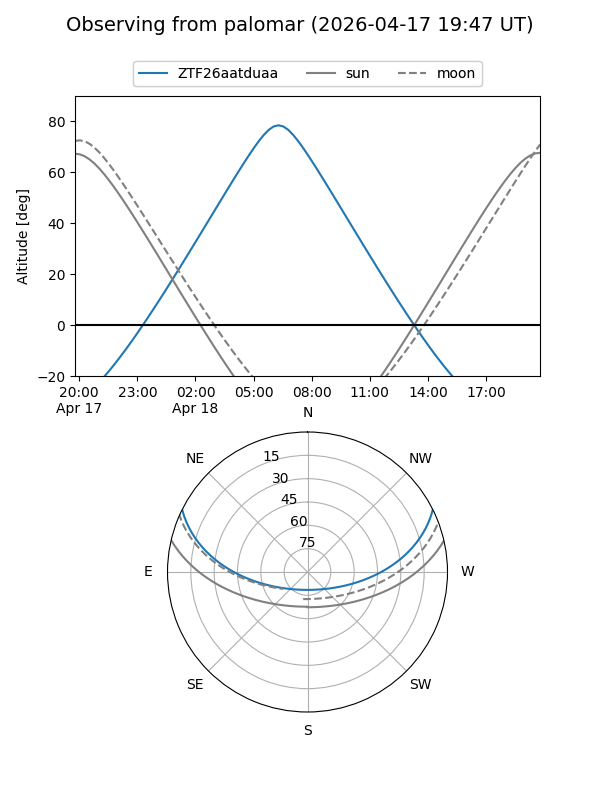

ZTF26aatduaa
Target ZTF26aatduaa at 2026-04-18 08:19
Aliases and brokers:
FINK: link
Lasair: link
ALeRCE: link
alt names
ZTF26aatduaa (ztf,fink_ztf)
Coordinates:
equatorial (ra, dec) = 183.4844,+22.00069
equatorial (HMS+DMS) = 12:13:56.25,+22:00:02.50
galactic (l, b) = (241.9337,+80.05577)
Flags:
Photometry:
last ztfg=20.26
1 ztfg detections
Lightcurve

Visibility


Additional plots